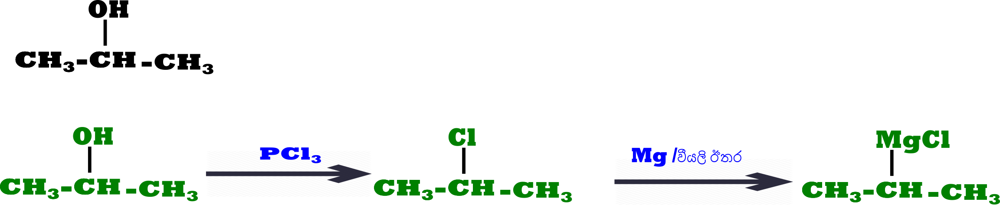
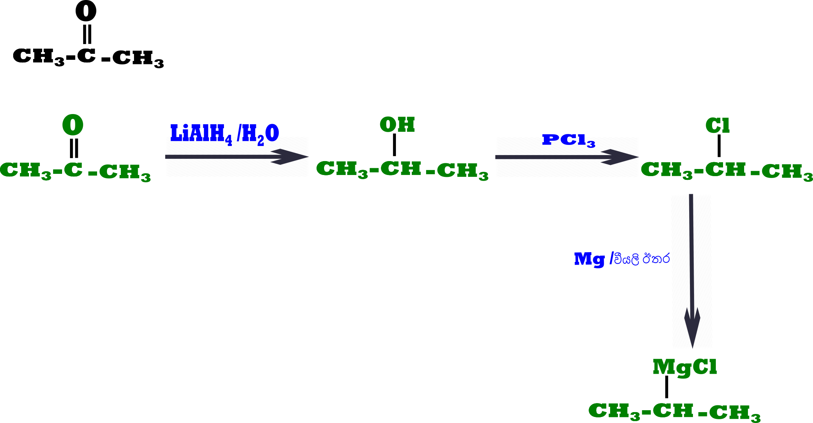

වැදගත්ම කොටසක්..පට්ට ලේසියි.!
මෙහිදි සාමානයෙන් සිදු කෙරෙනුයේ හැලජන අඩංගු කාබනික සංයෝගයකට කාබනික මාද්යක් තුල දිය කරන ලද(ඊතර) Mg යෙදීමයි.
පහත කාබනික සංයෝග යොදාගනිමින් Cl අඩංගු ග්රිනාඩ් ප්රතිකාරක සාදාගන්නා අයුරු පියවර වශයෙන් දක්වන්න..
1.
2 2.
ග්රිනාඩ් ප්රතිකාරක යම් යම් අවස්තාවලදි මේ විද්යට හදාගන්න බැරි අවස්තා තියෙනවා...විභාගෙට වැදගත් කොටසක් ඒක..ඒ කියන්නෙ ග්රිනාඩ් ප්රතිකාරකයක් හැලජන අඩංගූ කාබනික සංයෝගයක් තිබූ පමනින්ම සෑදිය නොහැක. ඒසදහා යම් යම් අවශ්යතා සපුරාලිය යුතුයි..ඒ ගැන වෙනම ඊලග කොටසෙ පැහැදිලි කරලා ඇති..